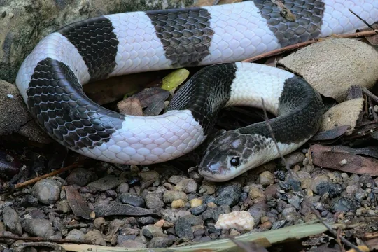
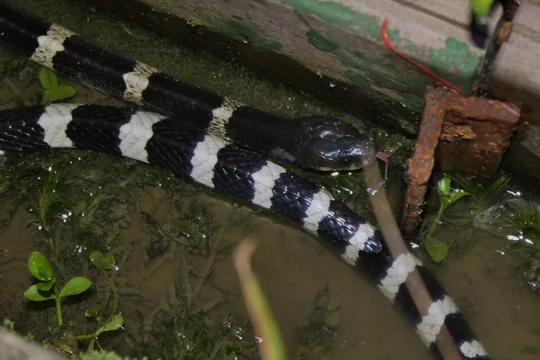
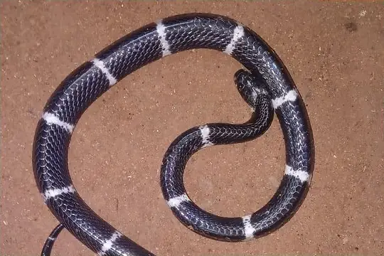
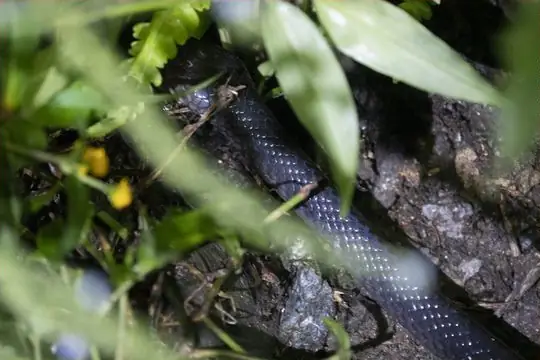
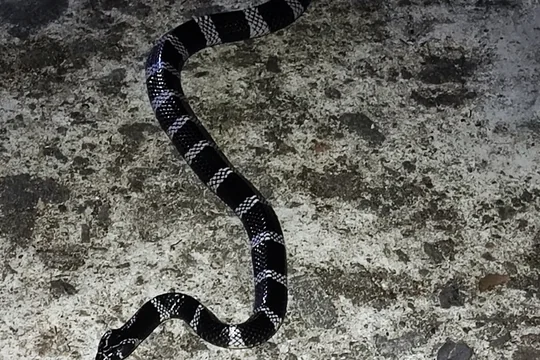
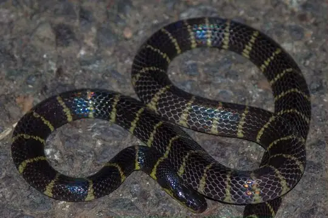
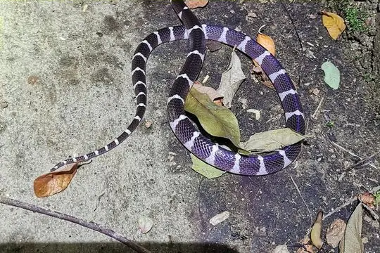

Bungarus
The genus Bungarus (family Elapidae) has 16 living species in SnakeList (all venomous), recorded in 19 countries.
- 16living species
- 16venomous
- 19countries
About the genus
A genus of the family Elapidae (cobras, mambas, coral snakes, sea snakes and relatives).
Species
Showing 16 species
 Banded KraitBungarus fasciatus
Banded KraitBungarus fasciatus
Blue KraitBungarus candidus
Burmese KraitBungarus magnimaculatus
Ceylon KraitBungarus ceylonicus Common KraitBungarus caeruleus
Common KraitBungarus caeruleus Greater Black KraitBungarus niger
Greater Black KraitBungarus niger Lesser Black KraitBungarus lividus
Lesser Black KraitBungarus lividus Many-banded KraitBungarus multicinctus
Many-banded KraitBungarus multicinctus
Northeastern Hill KraitBungarus bungaroides- No photo yetPersian KraitBungarus persicus

Red River KraitBungarus slowinskii Red-headed KraitBungarus flaviceps
Red-headed KraitBungarus flaviceps Sind KraitBungarus sindanus
Sind KraitBungarus sindanus
South Andaman KraitBungarus andamanensis
Suzhen’s KraitBungarus suzhenae Wall's Sind KraitBungarus walli
Wall's Sind KraitBungarus walli
No snakes in Bungarus match.
About the genus Bungarus
Compare its species
Its living species side by side. Lengths come only from SnakeList’s reviewed, sourced accounts; the others are left blank rather than guessed.
| Species | Venom | Recorded in | Adult length (reviewed accounts) |
|---|---|---|---|
| Banded Krait Bungarus fasciatus | Venomous | 14 countries (Asia) | No reviewed account yet |
| Blue Krait Bungarus candidus | Venomous | 8 countries (Asia) | No reviewed account yet |
| Burmese Krait Bungarus magnimaculatus | Venomous | 1 country (Asia) | No reviewed account yet |
| Ceylon Krait Bungarus ceylonicus | Venomous | 1 country (Asia) | No reviewed account yet |
| Common Krait Bungarus caeruleus | Venomous | 7 countries (Asia) | Average about 0.9 m; up to about 1.75 m |
| Greater Black Krait Bungarus niger | Venomous | 4 countries (Asia) | No reviewed account yet |
| Lesser Black Krait Bungarus lividus | Venomous | 4 countries (Asia) | No reviewed account yet |
| Many-banded Krait Bungarus multicinctus | Venomous | 2 countries (Asia) | About 1 to 1.5 m; up to 1.85 m |
| Northeastern Hill Krait Bungarus bungaroides | Venomous | 6 countries (Asia) | No reviewed account yet |
| Persian Krait Bungarus persicus | Venomous | 1 country (Asia) | No reviewed account yet |
| Red River Krait Bungarus slowinskii | Venomous | 3 countries (Asia) | No reviewed account yet |
| Red-headed Krait Bungarus flaviceps | Venomous | 6 countries (Asia) | No reviewed account yet |
| Sind Krait Bungarus sindanus | Venomous | 2 countries (Asia) | No reviewed account yet |
| South Andaman Krait Bungarus andamanensis | Venomous | 1 country (Asia) | No reviewed account yet |
| Suzhen’s Krait Bungarus suzhenae | Venomous | 3 countries (Asia) | No reviewed account yet |
| Wall's Sind Krait Bungarus walli | Venomous | 4 countries (Asia) | No reviewed account yet |